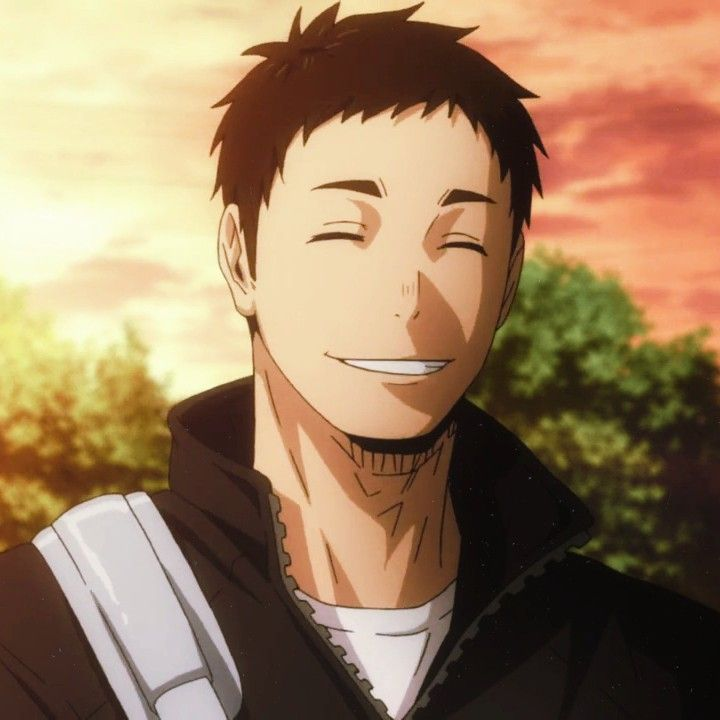
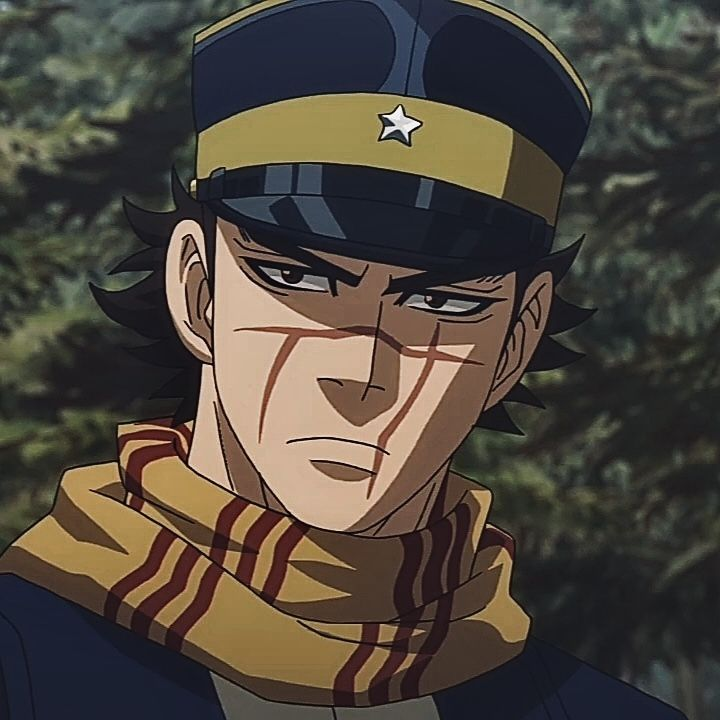

Arquivo RPG de Mesa
Coletânea de NPCs que marcaram minha jornada como jogadora
Conheça os Personagens
Itsuki Daichi
Darryl FoggBem-vindo ao meu mundo
Primeiramente, gostaria de agradecer a esse amigo que é o mestre e a mente por trás dessas histórias.
Muito obrigada pelas horas de diversão e de sempre saber mexer com nossas emoções.
E obrigada ao meu grupo de amigos, que ajudaram a desenvolver essas histórias.
Por fim, para quem visitou esse site, pesquise sobre o que é RPG de mesa e o que ele pode proporcionar.
O início de tudo: Gallows Creek
Esse RPG sempre ficará na minha memória, sendo a primeira mesa que joguei de verdade e como me envolvi na história.
A história se desenvolve na pequena cidade de Gallows Creek no anos 80.
A cidade guarda segredos sobre seu passado e na noite de retorno de Edgar, acontecem 4 assassinatos e os jogadores terão que descobrir o que aconteceu.
O colégio dos zés-ninguém: Okinawa
Baseado em Jujutsu Kaisen mas em um universo original.
Existe essa ilha com uma escola quase esquecida de feiticeiros que recebeu uma leva de alunos novos.
No dia de treino, um Gojo que deveria estar morto aparece vivo e atacando os oráculos dos templos.
E como acabam cada vez mais envolvidos, cabe aos jogadores impedirem o pior.
Uma segunda temporada fracassada
Essa me entristece, pois era uma continuação direta do universo que começou em Gallows Creek, mas acabou cancelada.
Aqui veríamos onde os nossos personagens estavam depois de 20 anos do acontecimentos trágico que apagou a cidade do mapa.
Dessa vez, estaríamos dentro da ordem que mexe com o paranormal, desenvolveríamos nosso caminhos sofrendo consequências do passado.